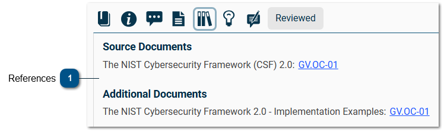
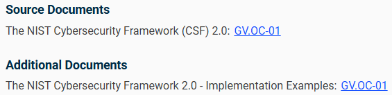

References Section
Selecting the
References
button on the
assessment screen
displays the References section.

References

The References section provides the user with links to any source documents or additional supporting documentation related to the question or requirement.
Select the hyperlink to open the document.
Made by Dr.Explain, documentation tool